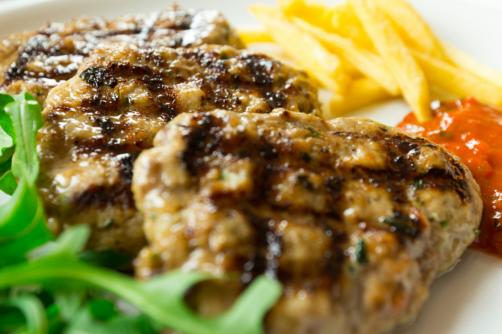

Culture and Food
Prizren is famous for its vibrant blend of cultures, festivals and traditional
music.

(Al Hadi, 2025)
Kosovo has a dominating Albanian population at around 90% of the state's population. Prizren is more diverse with a mix of Albanian, Serbian, Bosniak and Turkish communities. This diversity is reflected in the city's architecture, cuisine and cultural events. Turkish influence is prominant in the city due to the Ottoman Empire's rule over Kosovo for several centuries. Even the Turkish language is widely spoken in Prizren which is why it is one of the official languages in the manucipality.Visitors can enjoy local dishes such as qebapa, burek and flija, which are popular throughout Kosovo. Prizren is widely known across the balkans for its qebapa (cevapi).

(Buss, 2026)
The city is also known for hosting cultural events and celebrations throughout the year. Festivals like DokuFest and PrizrenFest are popular events who host famous Kosovar-Albanian singers and even singers from other parts of the world.